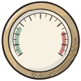
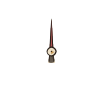
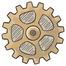
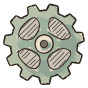

The Great Automatic Grammatizator
A sheet of parts, drawn in pen and wash. Everything here works: pull, turn and press.
Theme & Setting
The Sea Bottom

Passion




Brass
Verdigris
Ember
Madder
Payne's grey
Sienna
Sepia ink